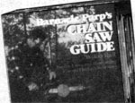
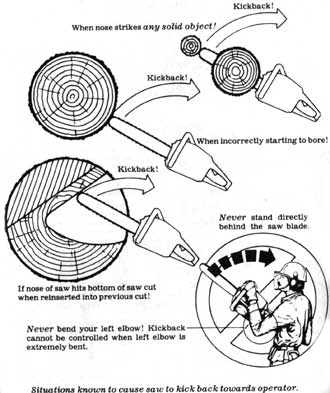
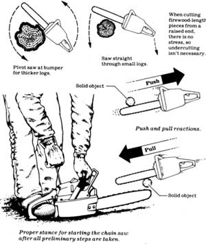

Barnacle Parp's Chain Saw Guide
How a chainsaw affects the environment; guide-bar size; hazards; how to handle a chain saw; how to start a gasoline chain saw; first cut; readjusting the bar and chain.
By the Mother Earth News editors
November/December 1978
WHO NEEDS A CHAIN SAW?
Anyone who cuts wood or uses cut wood. If you have or are going to have a wood-burning stove or a fireplace, you certainly need a chain saw. It can pay for itself in one week or less. (If your wood-burning heater is efficient, you can significantly lower your utility bills and your consumption of the nonrenewable and disappearing energy sources such as natural gas, oil, and coal. Several excellent chain saws cost less than two cords of cut wood and practically everyone lives near some source of seasoned logs.)
HOW DOES A CHAIN SAW AFFECT THE ENVIRONMENT?
Here's an interesting fact: The total timber harvest for 1900, before the chain saw, was 12.1 billion cubic feet; the total timber harvest for 1973 - with the extensive use of tractors, cranes, and chain saws - was 12.3 billion cubic feet. Almost the same.
A chain saw is dangerous to the environment if it is used in any way that is not fitting, proper, or natural. If you yourself do not use your chain saw to cut living trees for firewood or for fun, you'll have little effect on the environment. There are millions of unused cords of dead firewood left in the forests every year and that's not likely to change suddenly.
As for the emissions from a chain saw, they are relatively slight. A chain saw sounds and smells awful, but it really puts out far less poison than an automobile and is far more efficient in fuel consumption. If you use fuel in any other way, you use more fuel per work minute than you use with a chain saw.
GUIDE BAR SIZE
Gasoline chain saws are commonly available in bar lengths from 10 inches to 36 inches. There are some 8-inch bars available, especially on electric chain saws, but they are obviously not very practical, even for trimming the hedge. And there are professional saws with 60-inch bars. They're very practical for the work they're intended to do, but not otherwise.
The common and most useful lengths for most of us are 12, 14, 16, and 20 inches. Lots of people who cut a great deal of wood, year-round, keep two saws . . . one lightweight with a 14-inch or 16-inch bar, and one medium-duty or light production with a 20-inch or 25-inch bar. In general, anything longer than 25 inches is too awkward for most users, and therefore unsafe.
Most people find that a 16-inch bar is sufficient for nonprofessional use. In areas where you're likely to cut a lot of large wood, you may want a 20-inch or 25-inch bar. If you're only cutting wood for your fireplace, however, you can do fine in almost any area with a smaller bar. All you have to do is find wood that your saw can cut. There's always plenty of that: dead brush, stands of small aspen or birch, and good-sized logs up to 32 inches in diameter.
Whatever size bar you decide you need, be sure that your saw's engine has more than adequate power to operate it. In other words, look up the specifications for any saw you're considering. Find the bar lengths available for that saw. If you're buying anything larger than a mini-saw, get the bar length you want on a saw that can take a bar at least one size larger.
That is: If you want a 20-inch bar, don't buy a saw that can only take up to a 20inch bar; get one that can take a 25-inch or a 28-inch bar.
This is important for two reasons.
First, if your engine's power is more than adequate for the bar and chain you're using, you have an extra margin against strain and wear. And, second, if you later decide you need more reach, you can simply replace the original equipment with the next size bar and chain.
My own idea, for heavy use, is to get as large an engine as is practical and combine it with a medium-length cutting attachment. I use a saw that can take a 25inch bar but equip it with a 16-inch bar. I suggest that this configuration makes a very useful and versatile all-around chain saw.
HAZARDS
Many aspects of chain-saw work present potential threats to your health and safety. First is the obvious danger of the cutting attachment itself. It is meant to cut wood. It will also cut meat. When you operate a chain saw you must constantly be alert and take whatever precautions you can.
Kickback is the cause of 30 percent of all chain-saw injuries. It occurs when the chain, as it speeds around the upper part of the nose of the bar, comes into contact with something solid. When the chain is at the upper third of the nose, it can't cut efficiently and its movement forces the bar back and up, in the direction of the operator.
If you have to cut with the nose of the bar for any reason, be sure to start the cut with the lower part of the nose and be sure the saw is running at high speed as the chain touches the work. You should definitely avoid "boring" or otherwise using the nose of the bar before you are familiar with the operation of chain saws.
There are various anti-kickback devices available for many chain saws. Most of these devices can be back-fitted . . . in other words, if you own a McCulloc chain saw without a chain brake, you can take your saw to a McCulloch dealer and he can install a chain brake for you. This is true of most brands of chain saws, and most anti-kickback devices.
When you operate your chain saw, be alert for kickback at all times. Always cut with your left elbow locked, or with your arm as straight as possible. Cut only one log at a time. Take every precaution to be sure that the nose of your bar does not touch anything. Always cut as close to the engine end of the bar as you can. Use your saw's bumper spikes to grip the wood and provide pivot and balance for your saw.
Another problem caused by the chain is the pull or push that occurs as it catches in the work at the middle of the bar. Push occurs when the top of the bar hits the log. The chain catches in the wood and the saw is forced violently back toward the operator. Similarly, pull occurs when the work is forward of the bumper spike. The chain catches and violently pulls the saw forward until the spike hits the log. These two hazards are most likely to occur if the saw is not running at full speed as the chain hits the work, or if the operator isn't holding the saw firmly.
Certain safety precautions can help prevent chain-caused injuries. Competence and alertness are the operator's best protection. Next is proper clothing. Ordinary snug work clothes are best. You should certainly avoid wearing bulky or loose coats, sweaters, or gloves when you're working with a chain saw. Trousers should be snug and cuffless. I prefer ordinary jeans.
The cutting chain can also cause injuries when it breaks. A chain-catching pin built into the saw can protect the operator by stopping the chain before it flies into the body. Hand guards for the front handle and for the rear handle also help. Even when a chain catcher stops the broken chain, the end can still reach the operator's right hand. Many recent chain-saw designs incorporate a large guard to protect the right hand. Snug leather gloves can also help. Goggles or face mask and hard hat protect the operator's eyes, face, and head from flying chain.
Noise and vibration can be much more serious than they might seem. The best modern chain saws all incorporate designs that are intended to minimize vibration and noise. But you should take further precautions. Any prolonged session of chain-saw work increases the chance that vibration and noise will endanger your health. You should, if possible, avoid working with a chain saw for more than six hours in one day. On those rare occasions when you must operate your saw for extended periods, or if you're about to become a logger, at least be sure to wear ear protection and take frequent breaks. I've had an awful ringing in my ears, on occasion, that I couldn't get rid of for three days. It really is extremely unpleasant and it can do a lot of damage before you know it. Good, inexpensive, professional ear plugs are available from Bailey's, P.O. Box 550, Laytonvllle, California 95454.
As for the vibration, when it starts to bother you (after four or five hours or so), stop working. Never operate a chain saw when you're fatigued . . . that vibration can cause your muscles to turn to jelly without warning. It's a temporary condition, but it can be very dangerous if you and your saw are in a bad position, or if kickback catches you by surprise.
Always move your saw at least ten feet from the fueling point before you start it. The heat of the machine and unexpected sparks from the engine or the chain can start a big fire fast and the saw can explode. Don't take that lightly. It has happened. If you spill fuel on your clothing, don't operate your saw until you change. If the fuel cap should come off while you're running your saw, immediately switch the ignition OFF, or kill the engine by choking it to full choke. Never use gasoline for cleaning.
And never operate a gasoline chain saw in a closed area. The poison gases are odorless, tasteless, and invisible.
Proper cutting techniques can help protect you from trees that fall in the wrong direction, stressed limbs that try to snap your head off, and rolling logs that attempt to crush your legs. But proper cutting techniques can't protect you from the falling branches that we call widow makers. Obviously, large dead limbs are dangerous. The vibration of your saw in the tree's trunk can cause them to fall down on you. My only suggestion is to avoid cutting under limbs that might fall, or to have a watching helper warn you when one breaks. You can rehearse signals to facilitate your escape.
Small falling limbs are the ones that can surprise you with their speed, power, and deadly sharp points. They come down like spears and they can penetrate several inches of frozen ground, or anything else that happens to be in the way. All I can sly, faintly, is that cutting trees down is dangerous. If you're not up to it, buy logs or slabs and use your chain saw to cut them up on saw bucks. If you are going to cut down trees, you should most certainly wear a hard hat at all times, study the tree, use recommended cutting techniques, and stay alert. When you hear something snap and start to fall, leave your saw and retreat quickly.
Chances are you'll be alone with your chain saw often. Carry a whistle . . . a good loud one. If you get pinned by a tree, cut yourself, or break a leg, you can blast on the whistle. Someone will probably hear you, almost wherever you are.
Everything I've said about safety applies to electric chain saws as well. In addition, don't use more than one extension cord and don't stand on anything wet or work in rainy weather. Disconnect the saw before making adjustments or performing any maintenance.
HOW TO HANDLE A CHAIN SAW
Practice holding your chain saw and simulate a working stance. Space your feet far enough apart to permit a firm but comfortable balance. Grab the handles as if you mean it. Hold the saw firmly with both hands, with your thumbs curled around the handles. When you're bucking a log or working on the woodpile, you should keep your left elbow locked, or your left arm as straight as possible. Then, if the saw does kick back, you have more strength behind it to protect you. The saw will throw your arm up, on a pivot from your shoulder, instead of collapsing your arm backward, with the saw coming straight at you.
It is not a contradiction to say that you should work close to your saw. Don't be afraid of it. If your right arm is stretched, you will tire quickly and increase the chances of kickback. Hold the saw firmly and work close to it. When it's possible or convenient, as in lambing, keep the work between you and the cutting attachment of your saw.
Practice holding and moving with your saw until you are comfortable doing so. Also, become very familiar with the location of all controls, especially the ignition switch, or kill switch, and the oiler control. If your saw has no ignition switch, or OFF - ON switch, you must kill it by fully choking it. Get used to reaching that choke control . . . there will be a lot of times when you'll want to turn that thing off without looking at it (when you're watching a tree fall unexpectedly, for example).
HOW TO START A GASOLINE CHAIN SAW
The fuel tank is full of the proper mixture of regular gasoline and two-cycle engine oil. The oil tank is full of bar and chain lubricant and the oiler is working properly. If it's a new saw or a new chain, you've drenched the chain with additional oil . . . either with clean 10- weight nondetergent, nonadditive oil or with the same chain and bar lubricant that you put in the tank. The bar and chain are "cold-tensioned" according to your owner's manual. All nuts, bolts, and screws are tight. Your eyes, ears, hands, and head are protected with safety gear. You've moved at least ten feet from the fueling area and further from all fuel containers. No one else is near you and you are on the ground, standing in a safe area free of underbrush, boulders, or stray logs.
Place your saw on a clean piece of ground. Close the choke all the way. That means you pull the choke control button or lever all the way out, or in the direction of the arrow, or toward the word CHOKE, closing off the top of the carburetor.
If your saw has an OFF-ON switch, flip it to ON, to START, or away from the word STOP . .. whichever applies to your saw.
If your saw has a decompression valve, or a DSP valve, or a compression release, move it to the ON or START or OPEN position. In other words, push it in. This control relieves the pressure against the piston and makes it much easier to start larger chain saws.
Almost all modern chain saws are equipped with a throttle latch. This is a button or lever near the trigger, usually on the right side of the rear handle. On some saws, this latch will automatically half-open the throttle when you push it in. You have to squeeze the throttle control or trigger and then push in the throttle latch button. This locks the trigger at the half-throttle position. If your saw has a trigger interlock system, you will have to use your grip to simultaneously depress both the safety catch on the top of the handle, and the trigger. Then you can set the throttle with the throttle latch.
If you have a standard, full-sized chain saw with a rear handle, put the toe of your right work boot in the handle and press down, stepping on the handle. If you just kicked loose the throttle latch, reset it again. If yours is a mini-saw, steady the rear of the saw with your right knee. Keep all other parts of the body away from the saw.
Take hold of the starter rope handle with your left hand. Get a firm grip with a relaxed arm. Pull the starter rope out until you feel resistance. Without stopping, use more strength as you meet the resistance and briskly pull the rope to give the engine a swift, cranking spin. Don't pull the rope all the way out and don't let go. Hold onto the rope and it will rewind smoothly. Don't let it snap back.
After the engine has fired, move the choke control to half-choke whether or not the engine kept running. If the power plant stalled, repeat the starting procedure with the choke control at half-choke. If the engine continued to run, let it run at half-choke for half a minute and then move the choke to the OPEN position. Let the saw warm at half-throttle and half-choke for a few minutes. Do not race the engine.
Normally, a chain saw that has just been fueled will need three to five cranks of the starter rope to prime the engine. In cold weather it might take longer. A warm machine - one that has been operated recently - will often start with one crank, usually with the choke open (or OFF), and the throttle trigger at rest (undepressed).
After half a minute or so, be sure the choke is open. Keep your left hand firmly gripping the front handle. With your right hand, press the trigger a little . . . just enough to disengage the throttle latch. Release the trigger. Your chain saw is now idling.
If the engine stalled, try again. If the machine still won't idle, adjust its carburetor according to your owner's manual. Then repeat the starting procedure until the chain saw's engine idles properly, without the chain moving.
"Hey! This thing is shaking me to death and it's about to blow up." Yeah. Wait till you see what it does to wood.
FIRST CUT
After your saw is warmed and idling smoothly, turn it off. Get a good-sized log, at least 12 inches in diameter, and plan on cutting only part way into it, say a third or so. Don't cut more than halfway through the log until you know what you're doing.
Have the log firmly supported on the ground. Let there be no part of the log that is not fully supported. Stand on the uphill side of the log. If your saw or chain is new, add extra oil-the same kind that's in the saw's oil tank-by hand at this time. Start your saw on the ground, not on the log. Be sure the cutting attachment isn't touching anything. Never start a chain saw with the chain touching wood or resting on a log.
Hold the saw firmly in both hands, with the engine at idle. Bring the cutting attachment up above the log, with the nose of the bar pointing up slightly. Bring the body of the saw down slowly, still at idle, so that the bumper spike engages the wood. The chain should still not be touching the wood.
If you have a manual oiler or manual override, pump it like crazy. At the same time, squeeze the trigger as you pivot the saw on the bumper spike. The engine and the chain must be going full speed when the chain touches the wood. The idea is to coordinate the downward pivot of the cutting attachment with the increasing engine speed so that the machine is running at full speed and power a split second before it hits the wood. That will save the saw from racing "in the air," and will also save you from having the saw pulled violently forward by a slow-running chain.
Let the saw do most of the work. Don't force it into the wood. Pivot the machine on the bumper spike. Keep your left elbow straight but hold the saw firmly, while standing close to it. Use plenty of oil. Pump the oiler every ten seconds to break in a new saw. Keep your body just slightly to the left of the plane of chain rotation. Don't be afraid. You are in charge.
As the saw cuts down into the log, the nose of the bar will drop. When the cutting attachment has pivoted below horizontal, so that the nose is lower than the tail of the bar, move the saw so that the bumper spike grips lower on the log. About now you should be a third of the way through the log. Bring the bar up out of the cut very carefully, gradually decreasing engine speed as the bar comes out of the cut.
If you accepted these suggestions verbatim, your cutting attachment is not stuck in the log. If your bar is pinched because you cut too far, use a wedge or crowbar to widen the kerf enough to remove the saw. Don't use the bar to pry the saw loose, and don't try to cut your way out. Turn your saw off first so the moving chain isn't damaged by the wedge or bar.
If you didn't pinch the bar, your saw is still running at an idle and is removed from the cut. Without touching it, glance at the chain. If it isn't sagging, repeat the cutting procedure as above at another place on the log. Do this two or three times to heat the saw and the cutting attachment thoroughly. Be sure to use plenty of oil. If you have a manual oiler, pump it every 10 seconds while the chain is cutting. If you have an automatic oiler with a manual override, pump it every 20 seconds. Be sure to keep the saw going full speed. If you cut at less than full speed, the clutch will wear out incredibly quickly. When you remove the saw from the last cut, turn it off.
READJUSTING THE BAR AND CHAIN
Examine your chain while it's still hot. A hot chain stretches and there should be a slight sag, so that the side straps in the bottom middle are not quite touching the bar. The drive link tangs should be just visible, and riding well up in the groove of the bar.
The best advice is never to adjust the chain while it's still hot. You should let it completely cool. But we can't always take the time we should to do things right.
To tension a warm chain, turn your saw OFF. Pull the chain around the bar and snap it a few times while pumping the manual oiler. Then lay the palm of your glove flat on top of the chain and give it as fast a spin around the bar as you can. If the sag is very slight, side straps almost touching along the bottom rails of the bar, the tension is satisfactory. If it's too tight or too loose, you must set the tension.
Loosen the nuts on the bar bolts just enough to be able to move the bar. Hold the nose of the bar up while you turn the chain-tensioning screw. When the side straps are almost touching at the bottom middle of the bar, the tension is approximately correct.
And, above all, remember: There is one rule that no experienced chain saw operator ever breaks. NEVER touch the chain or attempt to adjust tension while the engine is running!
Excerpted from BARNACLE PARP's CHAIN SAW GUIDE by Walter Hall, copyright © 1977 by the author. Permission granted by Rodale Press. Available in paperback for $7.95 plus 95 cents shipping and handling from Mother's Bookshelf, P.O. Box 70, Hendersonville, North Carolina 28739
|
 |
 |
 |
|
 |
|
|